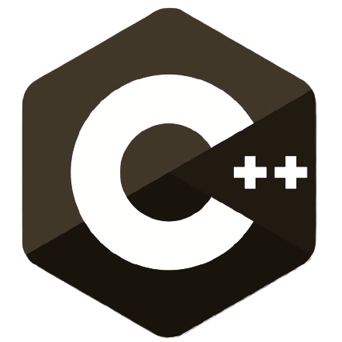
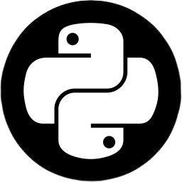
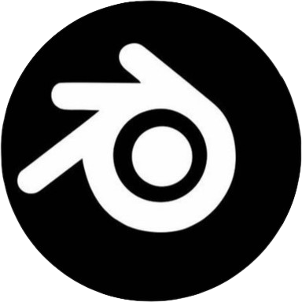
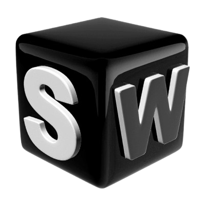
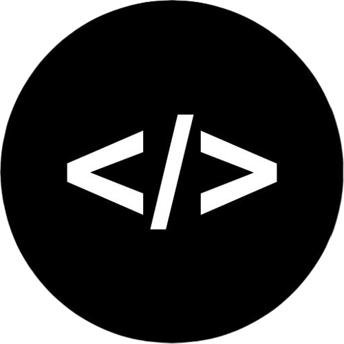
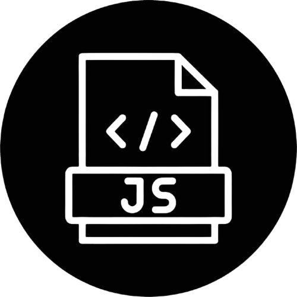

JACOB TINOCO
Ing. Mecatrónico orientado a Programación en AI y Procesos automatizados.
Un placer conocerte
Descarga mi CVProyectos
Trayectoria
Sobre Mí
Habilidades
Fuertes


Básico-Intermedio


Aprendiendo

